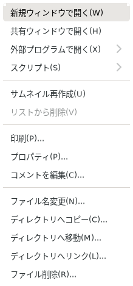
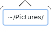
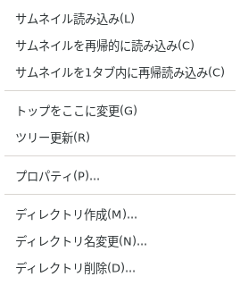
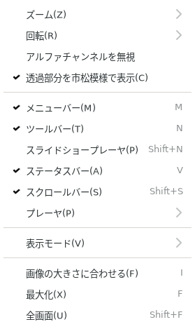

ここでは、マウスボタンで表示されるメニュー (マウスメニュー) について説明します。既定の設定では、右ボタンを押すと表示されます。割り当ては [設定] の各「マウスボタン」のページ (項6) で変更できます。メニューバーと同じ項目については、項3も参照して下さい。

サムネイルビューのマウスメニュー (画像ファイルの上で表示した場合)
サムネイルビュー上でのマウスメニューです。複数選択されている場合、選択されている全ての画像に対して有効です。
ディレクトリ・アーカイブの上で表示した場合にだけある項目です。そのディレクトリ・アーカイブのサムネイルを開きます。
選択中の画像を、新規にイメージウィンドウを作成して開きます。複数選択されている場合、その数だけイメージウィンドウが作成されます。
共有イメージウィンドウで開きます。共有イメージウィンドウを一つも作成していない場合、新規に作成します。既に共有イメージウィンドウが作成されている場合、そのウィンドウを再利用します。なお、このコマンドは複数選択時には使えません。
選択中のファイルを登録した外部プログラムに渡します。外部プログラムのリストは、項6.10を参照して下さい。
選択中のファイルを登録したスクリプトに渡します。スクリプトの設定は、項6.10.1を参照して下さい。
選択中の画像のサムネイルを再作成します。
このコマンドはコレクションタブのみ有効です。
リストから削除します。ファイル自体が削除されるわけではありません。
選択中の画像を印刷します。[ファイル | 印刷]と同じです。
ファイルのプロパティを表示します。ファイルの権限や所有者などを変更できます。
EXIF 対応で作成した場合にある項目です。画像の EXIF データを表示します。
コメントを編集します。
[編集] メニューの同じ項目と同じです。

タブのマウスメニュー (タブが 1 つの状態)
タブの部分で右クリックすると、現在表示しているタブのリストが表示されます。ここから任意のタブに移動することが可能です。
ディレクトリを再帰的に読み込んだ時など、大量のタブが生成された時に便利です。

ディレクトリビューのマウスメニュー
ディレクトリビューでは、ディレクトリの複数選択は出来ません。そのため、各コマンドの実行対象は、必然的にマウスカーソル下のディレクトリになります。
カーソル下のディレクトリを読み込み、サムネイルビューに表示します。初めてサムネイル表示する場合は新規にタブが生成され、既に読み込まれている場合は、そのタブがアクティブになります。
カーソル下のディレクトリ以下を再帰的に読み込みます。ディレクトリごとにタブが生成されます。
カーソル下のディレクトリ以下を再帰的に読み込み、全ての画像を1つのタブに表示します。
カーソル下のディレクトリを、ディレクトリビューのトップにします。
ディレクトリビューを更新します。コマンドラインからディレクトリ操作(作成・移動・削除)を行った場合に、それらを反映させるために行います。
ディレクトリのプロパティを表示します。権限や所有者などを変更できます。
カーソル下のディレクトリ直下に、新規にディレクトリを生成します。
カーソル下のディレクトリ名を変更します。
カーソル下のディレクトリを削除します。確認ダイアログの後、削除が実行されます。
プレビュー上のマウスメニューには、ズーム・回転・アルファチャンネルを無視・透過部分を市松模様で表示・動画・表示モード・スクロールバーを表示 [Shift + S]・サムネイル作成 [Shift + T]・メモリバッファ [Ctrl + B]・印刷 があります。各項目は、イメージウィンドウのメニューの同じ項目 (項3.1〜項3.3、項3.8) と同じです。

イメージウィンドウのイメージビューのマウスメニュー
イメージウィンドウのイメージビュー上のマウスメニューは、イメージウィンドウの [表示] メニュー (項3.3) と同じです。